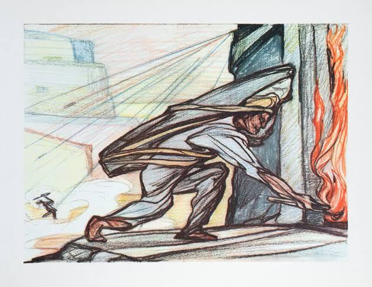
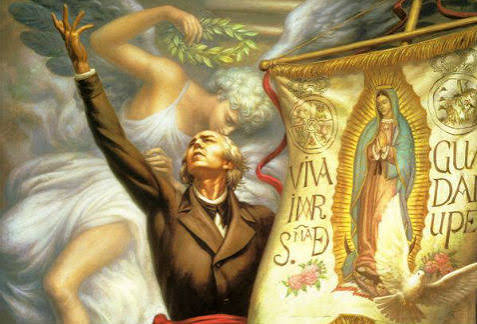
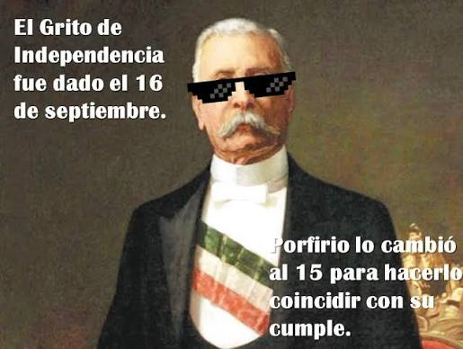
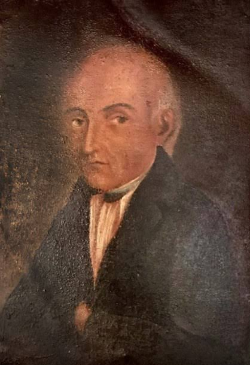
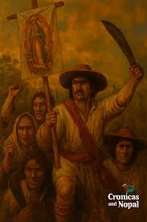
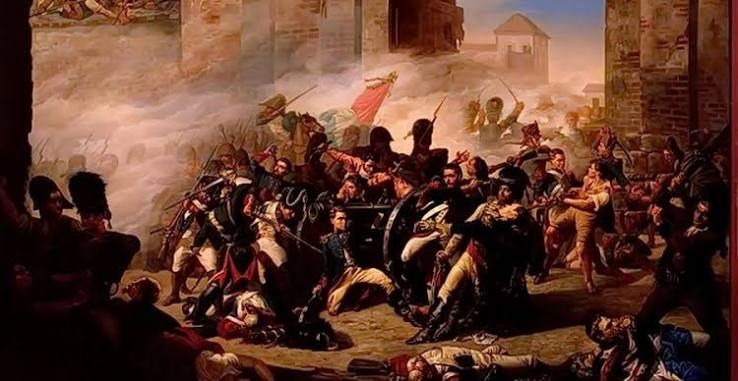

DATOS CURIOSOS Y MITOS
EL PIPILA QUEMO SOLO LA PUERTA DE LA ALHONDIGA DE GRANADITAS
EL MITO: Un minero llamado Juan José de los Reyes Martínez ("El Pípila") se colocó una pesada losa de piedra en la espalda para cubrirse de las balas, avanzó entre el fuego cruzado y quemó la puerta de madera de la Alhóndiga de Granaditas con una antorcha, permitiendo la victoria insurgente.
LA REALIDAD HISTORICA: Los historiadores coinciden en que "El Pípila" funciona más como una figura simbólica que representa a los cientos de mineros y campesinos anónimos que lucharon en Guanajuato. El asalto a la Alhóndiga fue una operación colectiva en la que intervinieron múltiples barreteros e insurgentes utilizando teas, parapetos improvisados y brea. La idea de que un solo hombre cargara una losa de decenas de kilos bajo una lluvia de balas para incendiar la puerta de un granero fortificado es un relato romantizado posteriormente.

MIGUEL HIDALGO GRITO "VIVA MEXICO!"
EL MITO: Durante la madrugada del Grito de Dolores, el cura Miguel Hidalgo agitó una bandera nacional y gritó entusiastamente "¡Viva México!" ante la multitud.
LA REALIDAD HISTORICA: El concepto geopolítico e identidad de "México" como nación unificada aún no existía de la forma en que lo conocemos hoy. Las crónicas de la época (de autores como Pedro García o fray Servando Teresa de Mier) señalan que el discurso de Hidalgo se enfocó en defender la religión católica y Fernando VII frente a la invasión napoleónica en España. Sus arengas probables fueron: "¡Viva la religión!, ¡viva nuestra madre santísima de Guadalupe!, ¡viva Fernando VII y muera el mal gobierno!".

PORFIRIO DIAZ MOVIO EL GRITO AL 15 DE SEPTIEMBRE POR SU CUMPLEAÑOS:
EL MITO: La ceremonia formal del "Grito" se realizaba el 16 de septiembre por la mañana, pero el presidente Porfirio Díaz ordenó cambiarla a la noche del 15 de septiembre para hacerla coincidir con la celebración de su cumpleaños.
LA REALIDAD HISOTRICA: La costumbre de conmemorar el Grito desde la noche del 15 de septiembre se realizaba décadas antes de que Díaz asumiera la presidencia. Documentos históricos demuestran que desde la década de 1840 (durante las festividades patrias bajo distintos gobiernos) se organizaban serenatas, repiques de campana y discursos en la víspera del día 16 para iniciar los festejos. Lo que sí hizo Porfirio Díaz en 1896 fue trasladar la Campana de Dolores desde Guanajuato hasta el Palacio Nacional en la Ciudad de México para hacer la ceremonia desde el balcón central.

EL RETRATO POPULAR DE MIGUEL HIDALGO REFLEJA SU ROSTRO REAL:
EL MITO: La famosa pintura del anciano de cabello cano en los laterales, calvicie superior y túnica sacerdotal representa fielmente la apariencia física de Miguel Hidalgo y Costilla.
LA REALIDAD HISTORICA: No existen retratos o pinturas hechas en vida a Don Miguel Hidalgo. Durante la guerra de Independencia y tras su captura, las autoridades virreinales destruyeron cualquier registro visual o gráfico sobre su persona. La imagen icónica que conocemos fue comisionada por el emperador Maximiliano de Habsburgo en 1865 al pintor Joaquín Ramírez, quien utilizó como modelos a un sacerdote belga y a un botánico alemán para crear una figura venerable de un "Padre de la Patria".

LA INDEPENDENCIA FUE UNA REBELION INICIADA POR LAS CLASES CAMPESINAS:
EL MITO: La guerra de Independencia surgió como una rebelión popular del pueblo oprimido que buscaba desde el primer día liberarse del dominio español para crear una república.
LA REALIDAD HISTORICA: La Conspiración de Querétaro y el movimiento insurgente inicial fueron encabezados por la élite criolla (españoles nacidos en América, como Allende, Aldama e Hidalgo). Su motivación principal era política y económica: la pérdida de privilegios frente a los españoles peninsulares y la crisis de legitimidad generada cuando Napoleón Bonaparte invadió España en 1808 y colocó a su hermano José Bonaparte en el trono. El movimiento incorporó al campesinado y a las clases populares como fuerza militar, pero el liderazgo ideológico original buscaba la restitución del rey español legítimo.

LA VICTORIA Y CONSUMACION DE LA INDEPENDENCIA FUE UN ACTO DE COMBATE INSURGENTE:
EL MITO: México logró su independencia definitiva gracias a una gran victoria militar de las tropas insurgentes que derrotaron por completo al ejército realista español en el campo de batalla.
LA REALIDAD HISTORICA: Tras la muerte de Hidalgo y Morelos, la lucha insurgente quedó reducida a una guerra de guerrillas fragmentada en el sur liderada por Vicente Guerrero. La consumación en 1821 se logró mediante un acuerdo político inesperado: la restauración de la Constitución liberal de Cádiz en España alarmó a las élites conservadoras y al clero de la Nueva España. El general realista Agustín de Iturbide pactó con Vicente Guerrero mediante el Plan de Iguala para declarar la independencia y proteger sus propios intereses e instituciones, dando nacimiento al Ejército Trigarante.
